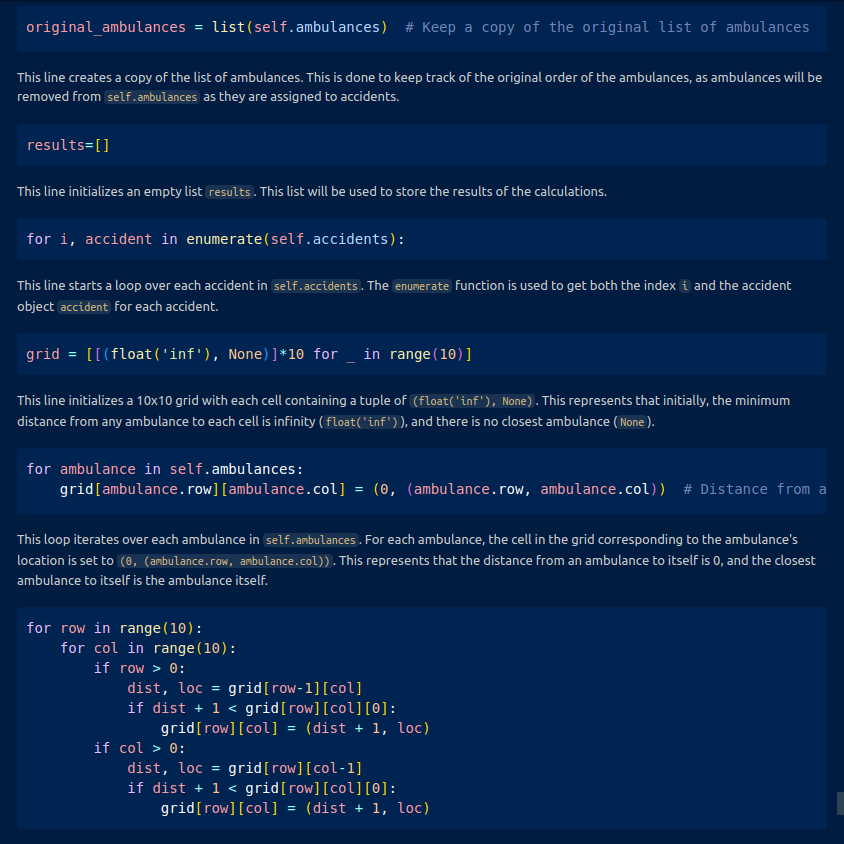
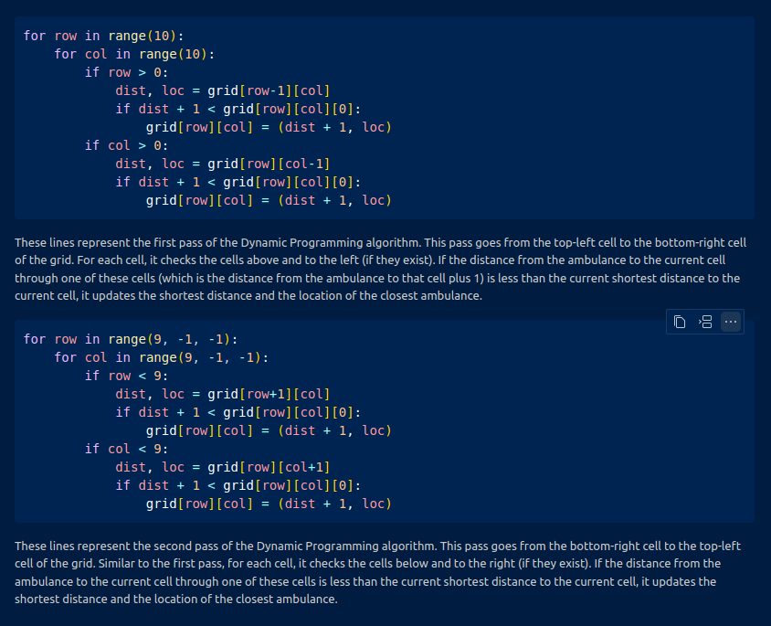

Welcome, Dr. Jane Doe!
Active Appointment
John Doe
Date
April 15, 2023
Time
10:00 AM
Provider
Dr. Jane Doe
Status
Confirmed
Age
22
Phone Number
0100
Appointment Type
Follow-up
Payment Method
Credit Card
Today's Appointments
Jane Smith
9:00 AM
Pending
Michael Johnson
11:00 AM
Confirmed
Sarah Lee
2:00 PM
Pending
| Patient | Time | Status | Actions |
|---|---|---|---|
| Jane Smith | 9:00 AM |
Pending
|
|
| Michael Johnson | 11:00 AM |
Confirmed
|
|
| Sarah Lee | 2:00 PM |
Pending
|
|
| Sarah Lee | 2:00 PM |
Pending
|
|
Record
Images

Description for Image 1
Date for Image 1

Description for Image 2
Date for Image 2
Description for Image 2
Date for Image 2
Description for Image 2
Date for Image 2